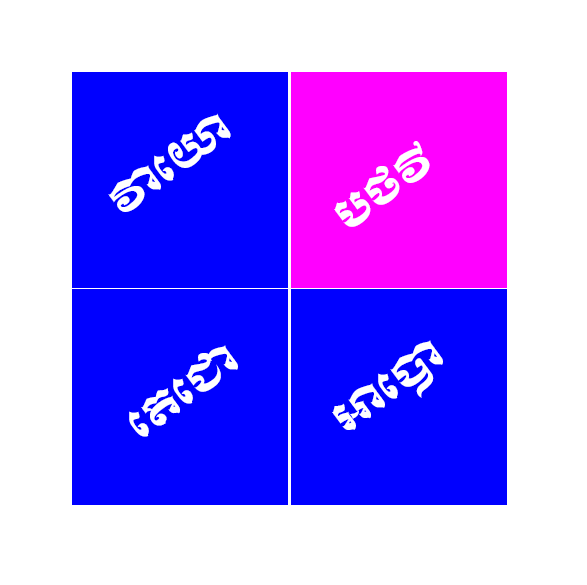

១ -បឋវីធាតុ (ធាតុដី - The earth-element)

បឋវីធាតុ មានលក្ខណៈ ២ គឺ ៖
១-កក្ខឡ បឋវី ឋឋវីដែលមានភាពរឹង ជាលក្ខណៈ (Hardness)
២ -អថទ្ធ បឋវី បឋវីដែលមានភាពមិនរឹង ជាលក្ខណៈ (Softness)
បឋវី មានវចនត្ថៈថា ៖ បត្ថីនត្ថេន = បឋវី ឈ្មោះថា បឋវី
ព្រោះអត្ថថា រឹង។
ន័យមួយទៀត សហជាតរូបានិ បឋន្តិ បតិដ្ឋហន្ត ឯត្ថាតិ = បឋវី
ប្រែថាសហជាតរូបទាំងឡាយ រមែងអាស្រ័យ តាំងនៅក្នុងធាតុនេះ ព្រោះហេតុនោះធាតុនេះ ទើបឈ្មោះថា បឋវី។
- លក្ខណាទិចតុក្កៈរបស់បឋវី៖
* កក្ខឡត្តលក្ខណា មានភាពរឹង ជាលក្ខណៈ
* បតិដ្ឋានរសា មានការតាំងមាំជាកិច្ច
* សម្បដិច្ឆន្នបច្ចុប្បដ្ឋានា មានភាពជាទីទទួលរងទុក នូវរូបដទៃៗផ្សេងទៀតជាអាការប្រាកដ
* អវសេសធាតុត្តយបទដ្ឋានា មានធាតុ៣ដែលនៅសល់ជាហេតុជិត (គឺ អាបោ តេជោ វាយោ)
- បឋវីធាតុមាន ៤ យ៉ាង ៖
១ -បរមត្ថបឋវី ឬលក្ខណបឋវី បានដល់ធាតុដីដែលមានភាពរឹង ឬទន់ជាសភាវៈ
២ -សសម្ភារបឋវី ឬសុត្តន្តបឋវី បានដល់ធាតុដីដែលមានចំណែកប្រកប មានទាំងខាងក្នុងកាយ និងខាងក្រៅកាយ។
👉 រូបខាងកក្នុងកាយរបស់សត្វ ជា ឧបាទិន្នរូប ហៅថា អជ្ឈត្តិកបឋវី
👉 រូបខាងកក្រៅកាយរបស់សត្វ ជា អនុបាទិន្នរូប ហៅថា ពាហិរបឋវី ។
អជ្ឈត្តិកបឋវី មាន ២០ ចែកជា៤ ពួក៖
I- ពួកតចបញ្ចកៈ
១- កេសា សក់
២- លោមា រោម
៣- នខា ក្រចក
៤- ទន្តា ធ្មេញ
៥- តចោ ស្បែក
II- ពួកវក្កបញ្ចកៈ
៦- មំសំ សាច់
៧- នហារូប សរសៃ
៨- អដ្ឋិ ឆ្អឹង
៩- អដ្ឋិមិញ្ផំ ខូរក្នុងឆ្អឹង
១០- វក្កំ តម្រងបស្សាវៈ
III- ពួកបប្ផាសបញ្ចកៈ
១១- ហទយំ បេះដូង
១២- យកនំ ថ្លើម
១៣- កិលោមកំ វាវ
១៤- បិហកំ ក្រពះ
១៥- បប្ផាសំ សួត
IV- ពួកមត្ថលុង្គបញ្ចកៈ
១៦- អន្តំ ពោះវៀនធំ
១៧- អន្តគុណំ ពោះវៀនតូច
១៨- ឧទរយំ អាហារថ្មី
១៩- ករិសំ អាហារចាស់
២០- មត្ថលុង្គំ ខួរក្នុងក្បាល